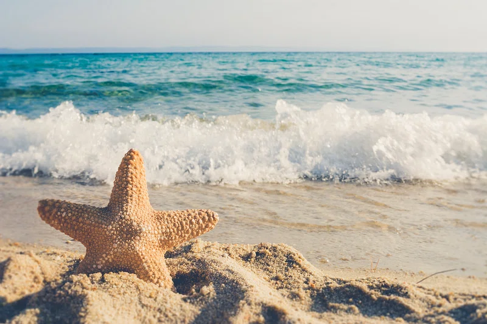
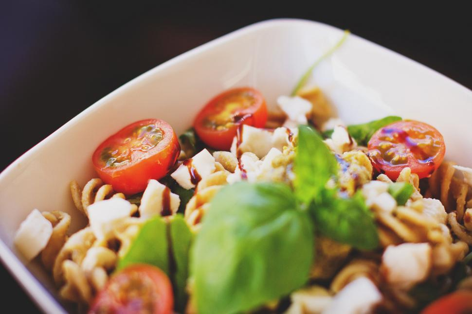

Embracing leisure
 In today’s fast-paced world, where hustle culture often reigns supreme, the importance of leisure can sometimes be overlooked. Yet, taking time to unwind and engage in activities we love is crucial for our overall well-being. Let us explore why leisure matters and some inspiring ways to incorporate it into our daily lives. There are several benefits of leisure and these are Stress Relief, Enhanced Creativity, Improved Relationships, Physical Health and Personal Growth. Here are some ideas for leisure activities. Outdoor Adventures, Creative Pursuits, Culinary Exploration and Cultural Engagement.Incorporating leisure into your life doesn't have to be complicated. By prioritizing leisure activities, you will not only improve your mental and physical health but also enrich your relationships and foster personal growth. Embracing leisure is not about shirking responsibility or being lazy, it is about recognizing the essential role downtime plays in our overall well-being. In a world that often prioritizes work over everything else, we must reclaim our right to rest, play, and simply be. By weaving leisure into the fabric of our lives, we create space for balance, happiness, and sustainable productivity. So, the next time you feel the urge to power through without a break, remember: sometimes, the most productive thing you can do is to pause, recharge, and embrace the joy of doing nothing at all.
A Culinary Journey
 Food is more than just a substance; it is a universal language that connects us across cultures and generations. From the spices of Indian cuisine to the fresh flavors of Mediterranean dishes, every meal tells a story. Therefore go and embark on a culinary journey, discovering the significance of food in our daily lives. Food is a gateway to understanding and appreciating the diverse world we live in. By exploring different cuisines,we not only delight our taste buds but also deepen our connections to culture and community. A culinary journey doesn't always require travel. With globalization, many of us have access to ingredients and recipes from around the world. But the real magic happens when we take the time to understand and appreciate the dishes we are creating or tasting. Whether you are trying your hand at homemade sushi, experimenting with Moroccan tagine, or savoring your first pad thai at a local restaurant, each meal offers an opportunity to immerse yourself in another culture.